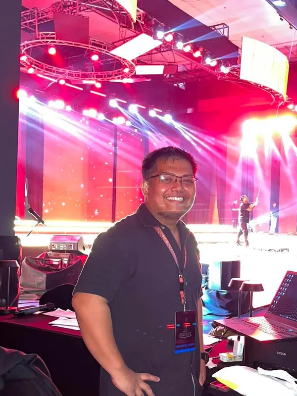
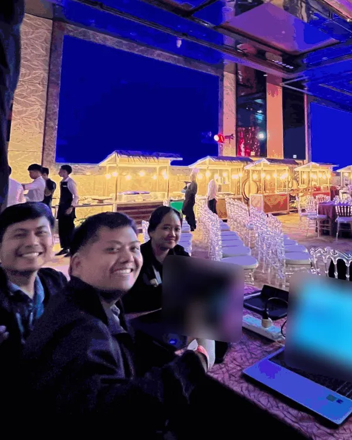
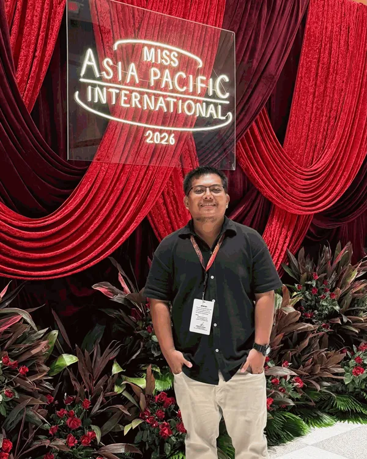

1 / 3
Pageant scoring network
IT specialist, audit team
The judges score on tablets run by the official tabulator. Our team of CPAs checks every score on a separate system and hands the final results to the host. I built that system's network: five laptops, one shared workbook, no internet, and three scripts that connect them.
- SetupThe host laptop keeps the original Excel workbook and shares one folder. Four encoders open the workbook from it.
- Version 1 failedThe host was ready, but no encoder could reach it. I had left their Wi-Fi on Public, and Windows won't share files on a Public network. So I rewrote the scripts: version 2 switches the laptop to Private by itself when it runs, then finds the host, by name first, then by address. It worked on every laptop.
- Locked downNo internet. Sharing turns on only over our own Wi-Fi, through one account that can open one folder. No password is stored in any script.
- Set up in trafficThe drive to J Park Island ran long, so I used it. With my phone's hotspot as a test network, I ran version 2 on each encoder on the way and watched it switch to Private and connect. At the venue only the host was left; the encoders joined the router and found it.
- ResultBoth nights ran without lag. I had the encoders save one at a time, after every few candidates, so two saves never hit the workbook at once.